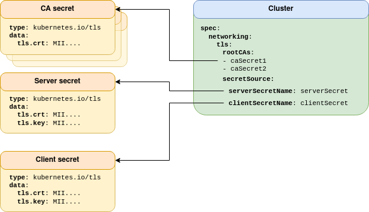
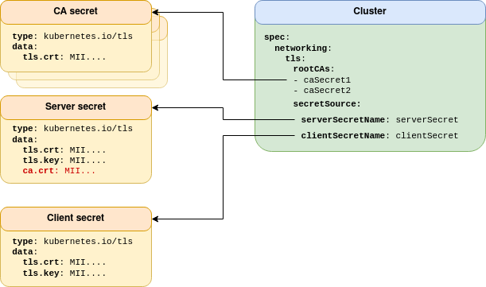

Couchbase TLS
Transport layer security (TLS) is responsible for securing data over networks. This section documents what security protections are available.
Basic TLS Configuration
Couchbase Server supports TLS out of the box. Couchbase Server generates a self-signed CA certificate for the whole cluster. Each pod that is added to the cluster gets a certificate valid for its hostname.
The TLS certificates generated by Couchbase Server are, however, not suited for use with Kubernetes. The DNS subject alternative names are insufficient to support anything other than very specific service naming, or any form of highly-available addressing.
For this reason, Couchbase Server provided TLS is not supported for use with the Operator or any Kubernetes environment.
Managed TLS Configuration
When using basic configuration the end user has no control over how the certificates are generated.
When using the public connectivity feature for example — the Couchbase Cluster is accessed from outside of the Kubernetes cluster — the internal DNS names that would be automatically generated by Couchbase Server are no longer valid.
The certificate needs to be valid for an alternative public DNS name.
Likewise the Prometheus exporter when operating over TLS needs to access the local pod on localhost.
It may also be desirable to integrate Couchbase Server into an existing corporate TLS hierarchy.
Managed TLS gives the ability for you to use any TLS certificates you like with Couchbase Server. A certificate may be a single certificate or an entire certificate chain.
TLS can be configured by the Operator in a number of different ways as described in the following sections.
|
When using managed TLS, the Operator and any sidecar containers will also communicate with Couchbase Server over TLS. Use of managed TLS is highly recommended in order to encrypt passwords and other sensitive information that may be exchanged between Couchbase Server and the Operator. |
For configuration details please see the TLS configuration how-to.
Kubernetes Native TLS
operator 2.3
From Operator version 2.3 onward, Kubernetes native TLS is the standard way of configuring TLS. Consider the following topology:

All Kubernetes secrets are of the standard kubernetes.io/tls type.
This provides the most generic method of TLS configuration, and the largest scope for 3rd party TLS management integration.
CA certificates are provided as a pool, whose referenced secrets only need contain the tls.crt field — it is unnecessary to expose private keys to maintain security.
A CA pool allows Couchbase Server to utilize one CA, while client certificates can authenticate against an arbitrary number of certificate authorities.
This provides isolated security domains and allows rolling CA rotation with minimal operational impact.
|
When using Couchbase 7.0 and earlier, only one CA is supported, therefore all server and client certificates must be signed by the same root CA. Specifying multiple CA certificates with Couchbase Server 7.0 and earlier will result in undefined behavior. |
Couchbase Server has strict naming and format requirements for server certificates and keys (see Legacy TLS). When using Kubernetes native TLS, the Operator abstracts some of these away to make configuration more flexible and compatible with your security requirements. For example, this configuration mode supports PKCS#8 formatted RSA keys. Elliptic curve is not supported by Couchbase Server, and the Operator is unable to convert between EC and RSA key types.
Cert-Manager TLS
operator 2.2
Cert-Manager TLS is an extension of Kubernetes Native TLS. The only difference is highlighted in red in the following topology:

Cert-manager generates TLS keys and certificates using the kubernetes.io/tls, and additionally supplies a ca.crt field in the secret, so you don’t need to worry about providing it manually via the CA pool.
The ca.crt field is not respected — if provided — in the client secret.
The root CA pool can be used to support a different client signing CA.
See Kubernetes Native TLS for additional details on multiple root CA support.
For more information, read the Cert-Manager Tutorial.
Legacy TLS
deprecated
Legacy TLS was initially designed as a direct integration of TLS with Couchbase Server. Consider the diagram below:

The server secret contains the server certificate and key that need to be mounted in the Couchbase Server pod. As no abstraction is performed by the Operator, the secret format and key names are non-standard, and need to be those hard-coded into Couchbase Server. Additionally only PKCS#1 formatted keys are supported.
This bespoke domain specific format is inflexible and incompatible with any 3rd party certificate management.
|
Use of this configuration mode is deprecated and will be removed in a future release. It is highly recommended that you use, or migrate to, one of the other modes. |
Node-to-Node Encryption
The Operator supports Couchbase Server’s node-to-node encryption feature. Secure network layer transport between pods is not secure by default, and needs to be manually enabled. To enable node-to-node encryption, TLS must be Operator managed.
The following modes are available:
- Strict TLS operator 2.3
-
All traffic between pods, be that internal control communication or user data, is encrypted. Additionally non-TLS ports are not exposed and cannot be used. Strict mode TLS is only available on Couchbase Server 7.1+.
- Full TLS
-
All traffic between pods, be that internal control communication or user data, is encrypted.
- Control plane TLS
-
Only internal control communication is encrypted. While this may be marginally faster, it will expose any user data on the network.
For further information, see read about the spec.networking.tls.nodeToNodeEncryption field.
TLS Client Authentication
Couchbase Server supports mutual TLS (mTLS). With this mode of operation not only do clients verify they are talking to a trusted entity, but the Couchbase Server instance can also establish trust in the client. Client authentication may be mandatory or optional.
When using mTLS then the certificate must also contain identity information in the form of a username that maps to a Couchbase Server user. With optional authentication if the client does not supply a certificate to Couchbase Server on request then it will fall back to basic (username & password) authentication.
mTLS is fully supported by the Operator. When enabled the user must supply the Operator with a client certificate valid for the cluster administrator.
For configuration details please see the TLS client certificate how-to.
TLS Certificate Rotation
Certificates go out of date and cause clients to stop working. Private keys corresponding to certificates can be compromised thus allowing communications to be decrypted. With this in mind, the Operator allows certificates to be rotated and replaced with new versions.
The Operator supports all possible rotation types:
-
Replacing a server certificate/key
-
Replacing a client certificate/key
-
Replacing the entire PKI
For details on certificate rotation read the TLS certificate rotation how-to.